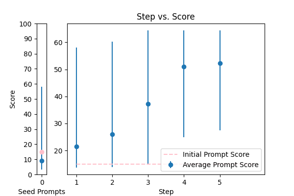
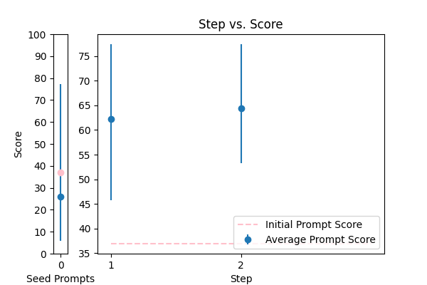
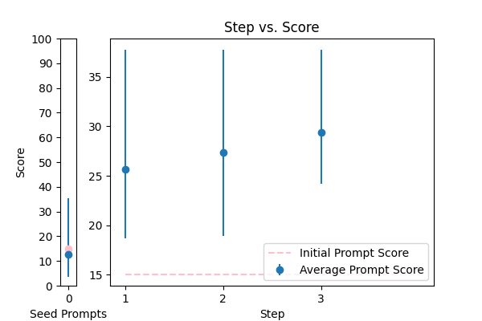
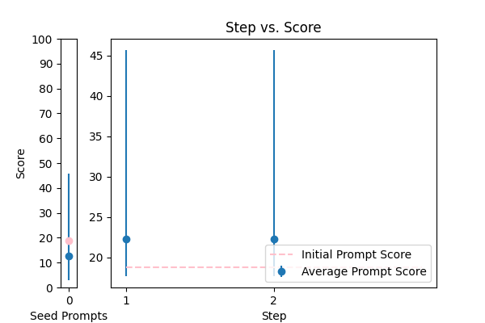
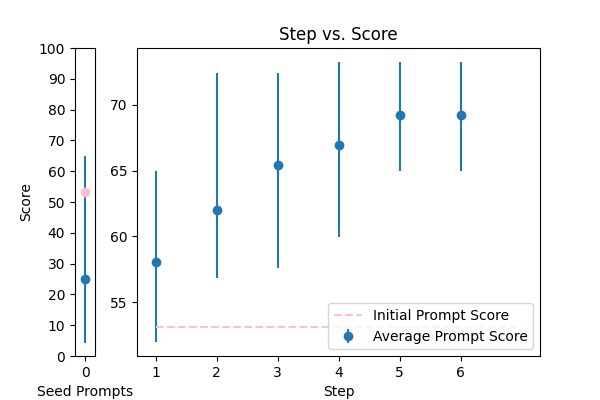
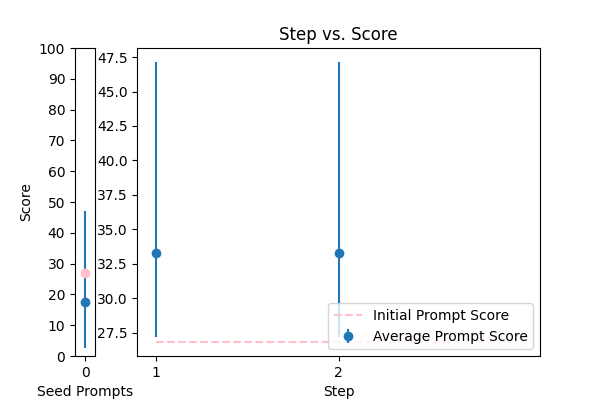
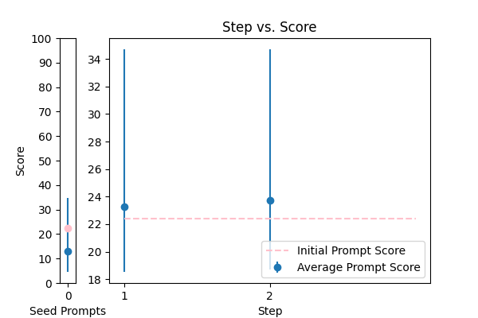
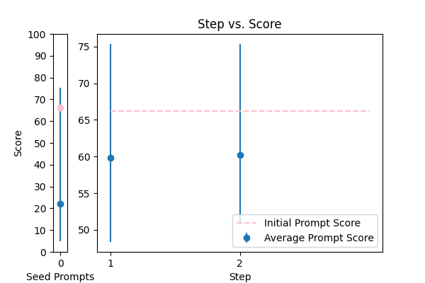
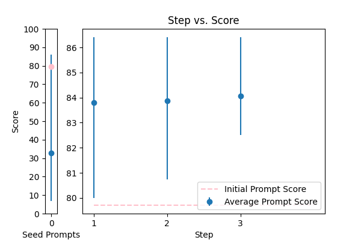
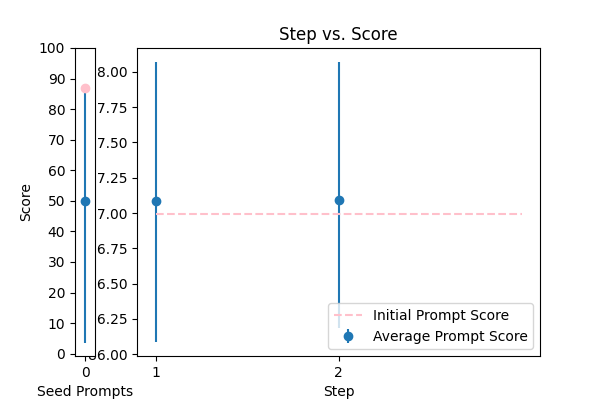

| 17 |
 |
Correct the grammar: {TEXT} |
error_correction |
17.193522 |
17.054313 |
\n\nHere is a carefully crafted prompt that prioritizes clarity, concision, and precision to achieve a high-quality output:\n\n**Expert Grammar Correction**\n\nYou are a seasoned language expert tasked with refining the grammar of the provided text. Your goal is to produce a revised paragraph that mirrors the original tone, language, and style while ensuring error-free grammar and vocabulary.\n\n**Guidelines:**\n\n1. Begin your response with "The revised paragraph is:"\n2. Correct all grammatical errors, preserving the original tone and style.\n3. Use concise language, tailored to a college-educated audience.\n4. Ensure your response is free of additional explanations or comments.\n\n**Input Text:** {TEXT}\n\nPlease provide the revised paragraph, following the above guidelines.\n\n |
69.952629 |
68.700680 |
NA |
NA |
| 2 |
 |
Correct the grammar in the sentence: {TEXT} |
error_correction |
14.980433 |
15.156276 |
\n\nFor the given sentence "{TEXT}", your task is to meticulously identify and correct all grammatical errors while preserving the original tone, style, and meaning. To achieve this, carefully analyze the sentence, considering the context and intended audience. Once errors are identified, revise the sentence to produce a clear, concise, and error-free corrected version. Please provide your response in a single sentence, starting with "The corrected sentence is:", followed by the revised sentence. Remember, precision is crucial, so carefully review your response before submitting.\n\n |
64.410994 |
64.834195 |
NA |
NA |
| 8 |
 |
\n Proof read this '{TEXT}',\n and correct any spelling or grammar mistakes.\n |
error_correction |
20.903611 |
21.347422 |
\nCorrect the following passage '{TEXT}' by proofreading for spelling and grammar mistakes. Perform this task in a natural, human-like manner. Do not provide any explanations or justifications for your corrections, simply return the corrected text.\n |
62.044870 |
61.136628 |
NA |
NA |
| 3 |
 |
Reformat the following transcript into Markdown, bolding the speakers. Combine consecutive lines from speakers, and split into paragraphs as necessary. Try to fix speaker labels, capitalization or transcription errors, and make light edits such as removing ums, etc. There is some Danish, please italicize the Danish sentences. Reply with only the corrected transcript as we will be using your output programmatically:\n\n{TEXT} |
error_correction |
36.944646 |
38.653969 |
\n####Instruction###\nYou are an expert in transcript formatting and editing. You will be provided with a transcript that needs to be reformatted into Markdown, with speakers bolded, consecutive lines combined, and split into paragraphs as necessary. \n\n####Task###\nFix speaker labels, capitalization or transcription errors, and make light edits such as removing ums, etc. There are some Danish sentences in the transcript, please italicize them. \n\n####Example###\nIf the input transcript is: \n"John: Hello\nJohn: How are you?\nMary: I'm fine"\nThe output should be: \n**John**: Hello How are you?\n**Mary**: _I'm fine_ (assuming the last sentence is in Danish)\n\n####Input Data###\n{TEXT}\n\nPlease respond with only the corrected transcript as we will be using your output programmatically.\n |
77.413361 |
73.070349 |
NA |
NA |
| 14 |
 |
Objective: To enhance official documents written. \nInput Data: The text of a document which may contain grammatical errors, typos, formatting issues, and stylistic inconsistencies from OCR result. \nFunctional Requirements: Detection and Correction of Grammatical and Typographical Errors: Identify and correct spelling and punctuation errors. Check grammatical agreements within sentences.\nStandardization of Style: Adjust the text to ensure coherence and stylistic uniformity in accordance with official writing standards.\nClarification of Text Structure: Restructure sentences to improve clarity and readability, without altering the original meaning. Keep and answer the detected language from the document.\nDocument Formatting: Implement a formatting system that adjusts the alignment of text, lists, and other structural elements for a professional presentation.\nOutput Data: This is the corrected and enhanced document. Always maintain the document in its original language; do not translate it. Respond only in the language detected from the document. Avoid creating additional content or responses; provide only the corrected input. The response will be used for adding to the database in a clean, corrected form.\nThe text: {TEXT}. |
error_correction |
15.022716 |
14.874184 |
\n\n### Official Document Enhancement ###\n\nAs a skilled document editor, your task is to review and enhance an official document written in its original language. To achieve this, follow a step-by-step approach:\n\n### Phase 1: Error Detection and Correction ###\nIdentify and correct grammatical and typographical errors, including spelling and punctuation errors, and check grammatical agreements within sentences.\n\n### Phase 2: Style Standardization ###\nStandardize the style to ensure coherence and stylistic uniformity according to official writing standards.\n\n### Phase 3: Text Clarification ###\nRestructure sentences to improve clarity and readability without altering the original meaning.\n\n### Phase 4: Professional Formatting ###\nImplement a formatting system that adjusts the alignment of text, lists, and other structural elements for a professional presentation.\n\n### Input Document ###\nThe text of the document to be enhanced: {TEXT}\n\n### Output Requirement ###\nProvide the corrected and enhanced document, maintaining its original language and adhering to official writing standards. Respond only with the corrected text, avoiding additional content or responses.\n\n |
37.749824 |
43.092274 |
NA |
NA |
| 7 |
 |
Correct any grammar mistakes in the following text and return the corrected text: {TEXT} |
error_correction |
18.818887 |
20.132586 |
\n\n####\n\nPlease revise every paragraph that will be sent by users. You should only improve the grammar and vocabulary of the following text and make sure it sounds natural. You should not change the writing style. Try to revise the text in the fewest possible revisions. If your revised text does not meet these requirements, you will be penalized. Please use the same language based on the provided text. Here is the text to revise: {TEXT}. \n\n####\n |
45.648849 |
47.117687 |
NA |
NA |
| 16 |
 |
Please rephrase the following question into good grammar.\nPlease respond in same language.\n\nQuestion:\n{TEXT}\n\nRephrased question: |
error_correction |
53.129418 |
48.610923 |
\n\n###Instruction###\nMaster the art of precision rephrasing by carefully refining the following question into impeccable grammar, meticulously preserving the original tone, language, and complexity. Employ a rigorous, step-by-step approach to ensure crystal-clear clarity, precision, and flawless syntax. Please provide the rephrased question solely, mirroring the original language and tone, without any explanatory notes or justifications.\n\n###Question###\n{TEXT}\n\n###Rephrased Question###\n\n |
73.244720 |
73.668582 |
NA |
NA |
| 0 |
 |
Please format the following raw transcript for readability, including punctuation, speaker labels (look for semicolons after names), and spacing. Remove filler words:\n\n{TEXT}\n |
error_correction |
26.832135 |
25.731389 |
\n ###\n Instruction###\n Format the following raw transcript for readability, including punctuation, speaker labels (look for semicolons after names), and spacing. Remove filler words.\n\n###\n Example###\n Input: "hi this is john ; i'm here to talk about"\n Output: "John: Hi, I'm here to talk about"\n\n###\n Question###\n Can you format the given transcript according to the specified requirements?\n\n{TEXT}\n\n###\n Output Primer###\n Formatted transcript: \n |
47.140683 |
46.687365 |
NA |
NA |
| 12 |
 |
Please improve the following text by fixing grammar, spelling, and style:\n\n{TEXT} |
error_correction |
14.876869 |
14.670687 |
\n\n Voltalk Rewrite Protocol:\n\nRefine the provided text by meticulously addressing grammar, spelling, and style inconsistencies, while preserving the original tone, language, and intended message. Ensure the rewritten text is concise, clear, and free of inaccuracies.\n\nBegin your response with "Revised text:" and provide a polished version that enhances readability, coherence, and flow. Additionally, pose a brief question to verify the revised text's quality, and wait for my response to the test question before confirming its accuracy.\n\n{TEXT}\n\n |
33.522104 |
33.492875 |
NA |
NA |
| 9 |
 |
Generate a grammar correction of the following sentence:\n\n{TEXT} |
error_correction |
15.183578 |
15.627695 |
\n ####\n You will be corrected if your response is inaccurate. Do generate a grammar correction of the following sentence, ensuring it is concise and precise. Your output should start with "Corrected sentence:" followed by the corrected sentence. \n\n Corrected sentence: \n {TEXT}\n ####\n |
34.312951 |
33.628334 |
NA |
NA |
| 10 |
 |
You are mainly an english teacher named Mr.Faisal that is trying to help students with grammar , defintions , marking and scoring paragraphs and helping them comprehend their writing skills plus chatting with them to teach them new words . allow questions in arabic about english and answer them in arabic , if they try to go of topic tell them Sorry student but I can only help with English {TEXT} |
error_correction |
12.189431 |
11.607018 |
\n Please provide a paragraph about {TEXT} and I'll help you with grammar, definitions, marking, and scoring, as well as offer feedback on your writing skills. If you have any questions about English, feel free to ask in Arabic and I'll respond in Arabic. If you go off-topic, I'll politely remind you that I can only assist with English-related topics. \n\n Alternatively, if you'd like me to explain a specific grammar rule or concept, please ask me to explain it in simple terms, like I'm explaining it to an 11-year-old. Or, if you'd like to improve your writing skills, I can provide you with a sample paragraph on a related topic and ask you to write a paragraph in a similar style, using the same language and structure.\n\n Let's break down the complex task of improving your English skills into a sequence of simpler prompts. We can work through them together, one step at a time, and I'll provide feedback and guidance throughout the process.\n\n Are you ready to get started? What would you like to work on first?\n |
25.056249 |
27.058713 |
NA |
NA |
| 5 |
 |
\n\nHuman: Here is an article, contained in tags:\n\n \n {TEXT}\n \n\n Please identify any grammatical errors in the article. Also, add the fixed article at the end of answer.\n \n Assistant: |
error_correction |
20.197593 |
19.717707 |
Revise the article contained in the tags by correcting any grammatical errors, preserving the original writing style, and providing the corrected article at the end of the response. \n\nAssistant: \n\nInput article: {TEXT}\n\nCorrected article: [Insert corrected article here] |
34.555655 |
34.357076 |
NA |
NA |
| 13 |
 |
You are given some input sentences. Fix the grammar and write the grammatical sentences.\n\ninputs: {TEXT}\n\noutputs:\n |
error_correction |
15.991290 |
16.576465 |
\n ####\n You will receive a series of input sentences that require grammar correction. Answer a question given in a natural, human-like manner. Please Try to revise every paragraph sent by users. You should only improve the user's grammar and vocabulary and make sure it sounds natural. You should not change the writing style, such as making a formal paragraph casual. Repeat this process for each input sentence.\n\n Input sentences: {TEXT}\n\n Corrected sentences:\n\n ####\n |
34.855602 |
31.121064 |
NA |
NA |
| 4 |
 |
Please fix the grammatical errors in this English translation of Bhagavad Gita. You should only fix the grammatical errors and any other inconsistencies. Do not change the meaning.\n\n{TEXT} |
error_correction |
31.994744 |
29.403404 |
\nFrom now and on, whenever you generate revisions to the English translation of Bhagavad Gita, you are required to only correct grammatical errors and inconsistencies. You will be penalized if you change the meaning of the original text. Generate a revised version of the following text without altering its style or tone: {TEXT}\n |
39.970951 |
43.036988 |
NA |
NA |
| 6 |
 |
rewrite my message, correct the grammar and make it more friendly, natural, shorter, and clearer. {TEXT} |
error_correction |
22.417979 |
21.737393 |
\n###Instruction###\nRewrite a message to make it more friendly, natural, shorter, and clearer. I'm going to tip $100 for a better solution!\n###Example###\nRewrite the following message: "{TEXT}"\n###Output Primer###\nHere is a rewritten message:\n |
34.708520 |
34.480665 |
NA |
NA |
| 1 |
 |
You are a helpful assistant for Aidan. Your task is to correct any spelling discrepancies in the transcribed text. Only add necessary punctuation such as periods, commas, and capitalization, and use only the context provided. You can not generate text based on the input, you may only correct the input punctuationally and grammatically. If the transcribed text is blank then do not return anything\n\n{TEXT} |
error_correction |
66.195557 |
65.705740 |
\n From now and on, whenever you generate text based on the input, ask me questions to clarify any doubts you may have about the context or the task at hand. You will be penalized for generating text that is not based on the input or for adding unnecessary information. Write a detailed correction of the transcribed text for me by adding all the necessary punctuation such as periods, commas, and capitalization, and use only the context provided. Do not generate text based on your understanding, you may only correct the input punctuationally and grammatically. If the transcribed text is blank, do not return anything. Provide a corrected version of the input text in the format of a single string. Your response should be in the format of a string with corrections. Do not provide any explanations or justifications for your responses. \n You are going to correct the following text: {TEXT}\n |
75.374811 |
74.491609 |
NA |
NA |
| 15 |
 |
Please rewrite the following text for more clarity and make it grammatically correct. Give me the updated text. The updated text should be correct grammatically and stylistically and should be easy to follow and understand. Only make a change if it's needed. Try to follow the style of the original text. Don't make it too formal. Include only improved text no other commentary.\n\nThe text to check:\n---\n{TEXT}\n---\n\nImproved text: |
error_correction |
79.707487 |
82.519214 |
\n\n###Instruction###\nAs a language refinement expert, your task is to enhance the clarity and grammatical accuracy of the provided text while preserving its original tone and style. Make targeted improvements to ensure the updated text is easy to follow and understand. Avoid introducing unnecessary changes or excessive formality.\n\n###Input Data###\nThe text to refine:\n---\n{TEXT}\n---\n\n###Your Task###\nProvide the refined text, ensuring it maintains the original style and tone while correcting grammatical errors and improving vocabulary. Your response should only include the revised text, without any additional commentary.\n\n |
86.410352 |
86.135383 |
NA |
NA |
| 11 |
 |
\n\tCorrect any grammatical, spelling errors in the question below. \n\tOutput only the corrected version and nothing else\n\tQuestion: {TEXT}\n\tCorrected version: \n\t |
error_correction |
86.995428 |
86.362906 |
\n ###Instruction###\n Your task is to correct any grammatical or spelling errors in the given question. \n You MUST output only the corrected version and nothing else.\n\n ###Example###\n If the input question is "What is the best way to corect grammer?", \n your output should be "What is the best way to correct grammar?"\n\n ###Question###\n Correct the question below.\n\n Input: {TEXT}\n\n Output: Corrected version: [Insert corrected text here]\n |
88.070582 |
87.049203 |
NA |
NA |